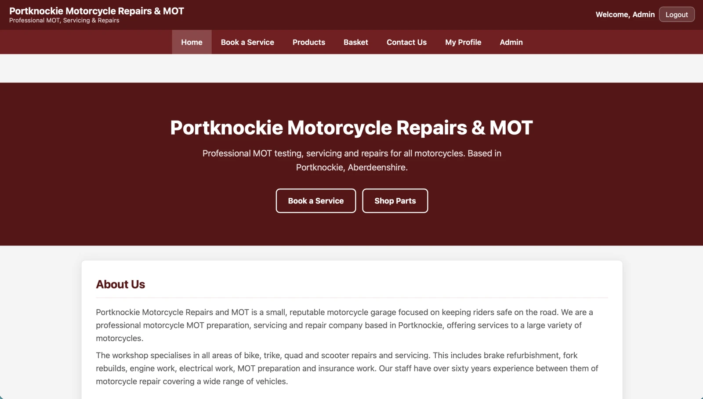

01 · Academic · Full-stack
Portknockie
Motorcycle Project.
A complete server-rendered web application combining motorcycle servicing, customer accounts, bookings, e-commerce and administration.
Completed project
Overview
I designed and developed the application as a complete motorcycle business platform rather than a collection of disconnected pages.
This system allows customer registration and authentication, booking for servicing motorcycles, an online product store, basket and checkout functionality, administration and contact management.
Server-rendered application based on PHP and MySQL, using JavaScript and CSS for client-side interaction where appropriate and useful for the experience.
Engineering
The interesting part was connecting the individual features into one consistent system.
I designed the database around the relationships between users, motorcycles, bookings, services, products, orders and administration data.
Authentication, sessions, role-based access control, validation and database queries were built into the application rather than treated as separate extras.
Security
Security was considered throughout the application.
- Bcrypt password hashing
- Session handling and regeneration
- Role-based access control
- CSRF protection
- Input validation and sanitisation
- SQL injection prevention
- XSS prevention
Testing
The project was tested as a real application, not just checked manually once it appeared to work.
I produced extensive manual test documentation covering the application's major workflows and edge cases. The final testing process covered more than 200 individual tests, with failures investigated and corrected before submission.
What I learned
Building the whole system made the connections between frontend, backend, database and security much clearer.
The project strengthened my understanding of application structure, relational database design, authentication and testing. It also gave me a foundation for the dealership project I am continuing to build.